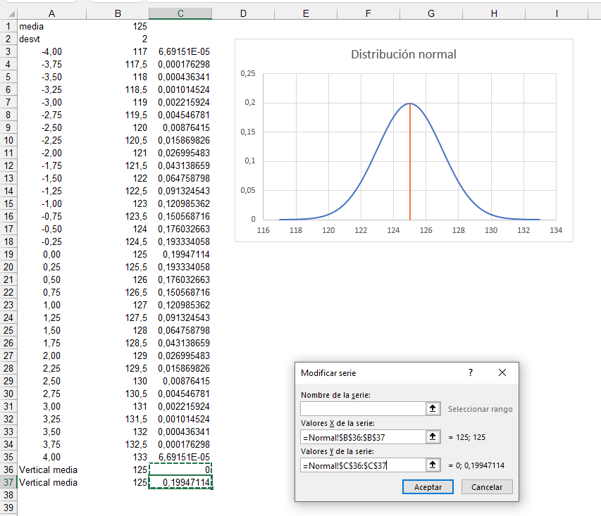

Hay muchos métodos en internet para hacer el gráfico de la distribución normal con Microsoft Excel. Aquí vamos a utilizar un método sencillo mediante los gráficos de dispersión, que permite redibujar la curva para cualquier valor de la media y desviación típica, añadiendo una línea vertical en la posición de la media.
En primer lugar, estableceremos los valores de X que vamos a representar. Sabemos que la probabilidad de valores a una distancia superior a \(\pm4\) desviaciones típicas es prácticamente cero. Según esto, vamos a establecer los valores de nuestra variable a representar en el eje X entre \(\pm4\ \sigma\). Con un número de puntos en torno a 30 es suficiente para que la curva normal sea una curva suave.
En Excel, introducimos en la columna A una secuencia entre -4 y +4, con un incremento de 0,25. Eso nos proporciona una secuencia de 33 puntos.
A continuación, colocamos en la columna B nuestros valores de media y varianza (en este caso empezaremos con una normal de media 0 y desv t 1), y, a la derecha de la serie de valores de intervalos del eje X que hemos introducido, añadimos una fórmula que nos calcula el valor X como media + n veces la desv t
No nos queda más que calcular el valor de la función normal que corresponde a ese valor X. Para ello, Excel dispone de la función =DISTR.NORM(valor; media; desviación típica; acumular):
valor será cada celda de nuestros valores X
Introducimos en
B1el valor de la mediaIntroducimos en
B2el valor de la desviación típicaEn el valor que hemos llamado acumular, introducimos
FALSO, puesto que no queremos la función acumulada (la veremos más tarde)Introducimos la fórmula
=DISTR.NORM.N(B3;B$1;B$2;FALSO)en el rangoC3:C35
Para hacer el gráfico, seleccionamos los valores de las columnas By Cque son los que vamos a representar en el gráfico
y a continuación, en el Menu>Ìnsertar, elegimos el gráfico de dispersión con curvas suavizadas:
Esto completa nuestro gráfico de la distribución normal estándar (la que tiene media = 0 y desvt = 1)
Como en B1y B2tenemos los valores de la media y la desviación típica, podemos modificarlos para representar cualquier otra curva normal con otros valores de media y desviación típica; por ejemplo para un valor de media de 125 y de desvt de 2, no tenemos más que cambiar los valores en sus celdas correspondientes:

Por último, vamos a añadir una línea vertical en la posición de la media. Para hacerlo, sólo necesitamos dos valores que definan los extremos de la línea, y que colocaremos en el extremo inferior del rango de datos.. Los valores de X son los de la media, y los valores de Y son cero y el valor máximo de la función, que calculamos con la fórmula =MAX(C3:C35)
Ahora vamos al gráfico y, en la opción Seleccionar datos…, añadimos una nueva serie, que va a estar formada sólo por estos dos valores X e Y:

Editamos la línea de la nueva serie, ajustando color y tipo de línea, y completamos el gráfico: